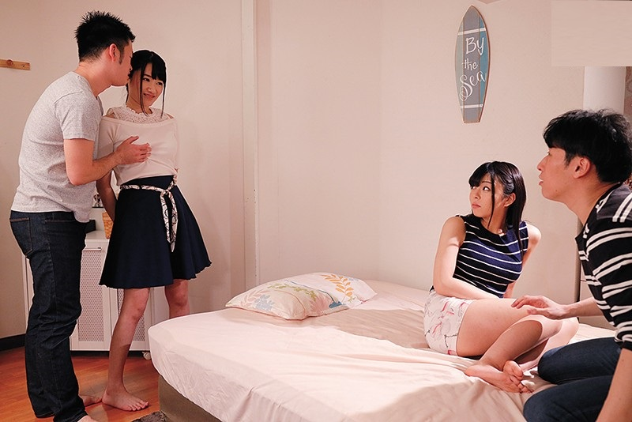

Điện thoại reọ Đó là Trường gọi. Khi tôi đặt máy xuống, tôi cố nhớ lại lý do vì sao chúng tôi đã mất liên lạc. Trường, tôi và Xuân ngày xưa rất thân thiết với nhau. Vợ chồng chúng tôi luôn ở bên cạnh nó mỗi khi nó gặp trục trặc với các cô gái. Phải đến ba năm nay chúng tôi không có liên lạc với nó.
Khi tôi báo tin này cho Xuân , cô ấy cũng rất mừng. Tôi bảo Xuân, Trường sắp đến thành phố này và sẽ ở lại nhà chúng tôi vài ngày. Cô ấy cũng như tôi, rất vui vì lâu lắm ba chúng tôi chưa nói chuyện với nhau. Hai tuần trôi qua và cuối cùng Trường cũng thông báo ngày đến thành phố. Tôi không thể đi đón Trường được vì vậy tôi bảo Xuân đi đón. Cả ngày hôm ấy tôi trông ngóng lúc hết giờ làm. vùa hết giờ làm, tôi lao vội về nhà. Khi tôi bước vào nhà, Xuân đang làm bữa tối còn Trường đang ngồi trong phòng khác búng ghi ta. Ngày xưa tôi và nó đã từng ở trong một ban nhạc và cả hai chúng tôi cùng thích nhạc. Khi thấy tôi, nó đặt đàn xuống và nhào ra ôm chầm lấy tôi. Chúng tôi ngồi xuống và chuyện cứ rôm rả như ngô rang. Được mộtlúc, Xuân gọichúng tôi vào ăn tối. Trong bữa tối, vợ chồng chúng tôi biết được Trường vẫn còn độc thân. Nó làm việc tối mắt tối mũi, về đến nhà là không thiết đi đâu nữa. Xuân đứng dậy, dọn bát đĩa bảo Trường:
– Thế thì anh phải tìm cách quyến rũ các bà vợ xinh đẹp của các đức ông đáng kiính ấy.
Chúng tôi cùng dọn bát đĩa mang vào bồn rửa bát. Xuân đứng rửa bát, Trường lau bát rồi chuyển cho tôi xếp vào chạn bát. Vừa làm chúng tôi vừa tán gẫu. Câu chuyện vẫn sôi nổi và chúng tôi cảm thấy như đang sống lại ngày xưa. Trường dạo này làm ở một công ty xuất nhập khẩu và đợt này Trường ra t hành phố này vì một mối làm ăn. Trường nói:
– Nếu không có vụ này thì không biết đến bao giờ bọn mình mới gặp lại nhau.

Dọn dẹp xong, chúng tôi ra phòng khách nói chuyện tiếp. Xuân mở cassette còn tôi khui một chai rượu. Chuyện nọ kéo sang chuyện kia và cuối cùng dẫn đến chuyện tình dục. Trường cho vợ chồng tôi biết là lâu lắm rồi nó chưa làm tình với một ai cả. Tôi bảo:
– Thế thì mày chắc khổ sở lắm nhỉ vì mày trẻ tuổi thế này thôi nhưng là một con dê già.
Cả ba chúng tôi cùng cườị Trường trả lời rằng nếu không thủ dâm thì chắc bây giờ Trường đã hoá điên vì nứng mất rồi. Một trận cười lại phá ra và Trường đứng dậy vào nhà tắm. Ngay khi nghe tiếng kéo cửa nhà tắm, tôi quay sang nói với vợ:
– Em còn nhớ là em bảo rằng đã có lúc em thấy thèm muốn Trường không?
– Nhớ chứ, nhưng em biết em đã lấy anh và chắc chắn đó không phải là điều anh muốn.
– Không sao, anh luôn muốn có dịp nào đấy cả ba chúng ta cùng làm tình với nhau và hôm nay là một dịp tuyệt vời.
– Em cũng không biết nữa. Em chưa từng làm tình với ai ngoài anh, và em cũng không biết phải làm gì, như thế nào và thậm chí em cũng không biết bắt đầu ra sao nữa. Em muốn được cùng hai anh nếu anh không ghen- Xuân ngừng lại nhìn tôi thăm dò thái độ rồi tiếp tục -Các anh là hai người em yêu nhưng
anh quan trọng hơn và em không muốn làm anh bị tổn thương.
Vừa lúc đó, Trường bước vào, ngồi xuống.
– Bây giờ đến lượt em. Xuân đứng dậy vào nhà tắm.
– Trường này, mày có biết là vợ chồng tao rất quý mày, và tao hy vọng điều tao sắp nói ra không làm mày sốc, nhưng thự? sự?là tao muốn mời mày có một “bữa ngủ thân mật” với vợ chông tao. Tao hy vọng là mày sẽ thích được làm người thứ ba trên giường ngủ
– Oa – Trường sung sướng – Tao cũng quý cả hai vợ chồng mày, và tao thấy Xuân thật quyến rũ, nhưng tao không muốn mất đi tình bạn giữa chúng ta. Thế Xuân có ý kiến gì về điều này.
– Xuân rất thích mày. Nhiều lần chúng tao đã nói về chuyện này. Thỉnh thoảng chúng tao còn giả vờ có mày trên giường ngủ với vợ chồng tao. Trường tròn mắt nghe tôi nói và bảo tôi rằng nó rất choáng nhưng cũng rất háo hức muốn cùng vợ chồng tôị
– Thế phải làm thế nào để bắt đầu được đây? Trường hỏi. Tôi trả lời:
– Chỉ cần mày bắt chước tao là được.
Xuân bước vào và ngồi xen giữa hai chúng tôi. Tôi đứng dậy, giảm ánh sáng xuống và rót cho mỗi người một cốc nước lọc. Tôi ngồi xuống sát cạnh vợ mình. Xuân ngả người ra sau và dự? đầu vào thành ghế làm cho người cô ấy trôi xuống dưới một chút. Sự?chuyển động này làm tay tôi dịch chuyển một chút lên trên đùi cô ây. Tôi bóp nhẹ đùi vơ.. Trường đứng dậy, đổi đĩa CD rồi quay lại. Tôi nhận thấy Trường ngồi sát hơn lúc đầu, giống hệt tôi ban nãy. Trường nhoài người ra trước để lấy cốc nước và một tay chống vào đùi Xuân để tạo điểm tự?. Trường không bỏ tay ra khi lấy được cốc nước và Xuân cũng không nói gì. Tôi nhìn vợ và thấy cô ấy khẽ gật đầu. Tôi hiểu cô ấy muốn nói gì. Tôi cúi xuống hôn cô ấy vào môi. Vừa hôn, tôi vừa nhẹ nhàng vuốt đùi cô ấy từ trên xuống dướị
– Này, chúng mày bỏ rơi tao đấy à? Trường nói.
Tôi ngừng hôn Xuân và ngồi ngay ngắn trở lại. Tôi xoay đầu Xuân về phía Trường. Trường cúi xuống hôn Xuân. Nhìn hai người môi chạm môi, tôi nổi hứng lên. Buồi tôi cứng dần lên. Tôi tiếp tục vuốt ve đùi Xuân. Tôi thấy Trường cũng vừa hôn vừa vuốt ve đùi vợ tôi. Xuân đẩy Trường ra, kéo tôi lại và hôn. Cô ấy hôn tôi thật sâu. Rồi cô ấy thì thầm vào tai tôị:
– Anh chắc là không sao chứ.
Tôi nhìn sâu vào mắt cô ấy, gật đầu:
– Yên tâm.
Xuân rót một cốc nước nữa cho mình rồi quay sang Trường:
– Em hôn anh thế này anh không nghĩ xấu về em chứ.?
– Hoàn toàn không. Anh nghĩ là em hôn anh vì em yêu anh và em thấy anh hấp dẫn và còn bởi vì ba chúng ta rất thân nhau. Anh không nghĩ là ai em cũng hôn được.
– Em chưa bao giờ hôn ai ngoài anh Phương nhà em và em muốn anh biết điều đó. Cả hai vợ chồng em yêu anh và em thấy anh thật hấp dẫn.
– Anh cũng vậy. Anh yêu cả hai vợ chồng và anh cũng thấy em thật hấp dẫn.
Trường cúi xuống, và hôn cô ấy một lần nữa. Xuân dự? lưng vào tôi ngả ra sau để Trường hôn. Khi họ hôn nhau, tôi đặt tay lên đùi Xuân rồi từ từ vuốt ve khắp cơ thể cô ấy. Xuân rên lên khe khẽ khi tay tôi tiến lên đôi gò bồng đảo. Tôi ngả người ra thành ghế để cô ấy ngả ra sau nhiều hơn. Trường cúi theo và cũng di chuyển tay từ đùi lên ngự? vợ tôi. Cô ấy rên lên to hơn, tiếng rên bị bịt tắc nghẹn trong họng không thoát được hết ra ngoài. Ngự? cô ấy cứng dần chĩa ra phía trước. Bây giờ Xuân gối đầu trong lòng tôi hầu như nằm ngửa ra trên ghế bành còn Trường nằm đè lên cô ấy mà hôn. Tôi thự? sự?nứng tình và cả hai người kia cũng vậy. Tôi cởi từng cúc áo cô ấy ra rồi đưa tay vào trong kéo nịt ngự? xuống, để lộ ra bộ ngự? trắng nõn nà, và nhô cao. Trường ngồi dậy, phụ tôi một tay lột trần cô ấy ra. Tôi khẽ khàng trườn khỏi người cô ấy, để cô ấy nằm thoải mái trên ghế bành còn tôi ngồi lên bàn nước. Trường cúi xuống ngự? cô ấy và ngậm một bên vú. Xuân rên lên sung sướng. Cô ấy nhìn tôi và đưa tay vuốt ve buồi tôi qua lớp vải quần. Trường nhả vú cô ấy ra, hôn dần xuống rốn, còn tay thì cởi cúc quần Xuân. Tháo xong mấy cái nút Trường đứng dậy tụt quần cô ấy ra khỏi chân. Trên người Xuân chỉ còn cái quần xì. Khi tôi nhìn vợ tôi chỉ còn mỗi một mảnh vải bé tí chỗ tam giác quỷ, tôi không thể nào tin được là tôi có thể nứng được đến thế. Lúc Trường quỳ xuống đất, bắt đầu hôn chân vợ tôi rồi tiến dần lên khu rừng rậm Amazon ẩn dưới lớp vải, tôi thấy nhột nhạt, tinh dịch trong người như sắp phọt ra. Trường háo hức kéo quần xì vợ tôi ra nhưng có lẽ nứng quá, Trường xé luôn khỏi phải tụt ra khỏi đôi chân thẳng tắp của vợ tôi. Trường cúi xuống, le lưỡi liếm dọc theo hai bờ môi lớn của cô ấy rồi dùng lưỡi tách đôi môi ấy, đi vào sâu. Xuân rên lên khi lưỡi Trường tiến vào trong. Tôi không thể nào tin được là tôi đang xem một người đàn ông bú lồn vợ tôi và cô ấy tỏ ra rất thích thú. Điều này thật khác thường nhưng cũng rất kích thích
– Đưa cho em cục thịt của anh nào.
Xuân nói khi cô ấy nhìn tôi. Tôi đứng dậy, tụt quần áo. Trường vấn tiếp tục bú lồn vợ tôi. Tôi tiến lại phía đầu cô ấy, và Xuân nhanh nhẹn chộp lấy buồi tôi rồi bú. Trường đứng dậy, cởi quần áo. Khi tôi nhìn thấy buồi Trường, tôi không thể nào tin được là nó to và cứng như vậy. Tôi biết Trường rất đô nhưng tôi không thể nghĩ là buồi nó có thể dã man đến vậy. Nó phải dài quá rốn, to hơn dùi cui cảnh
sát, nổi đầy gân. Tôi rút buồi ra kkhỏi miệng Xuân, bảo Trường cầm lấy đầu kia của bàn nước và chúng tôi khiêng nó ra góc tường phía kia. Bây giờ trước ghế bành có thêm một khoảng rộng. Vợ tôi bò xuống dưới ghế, quỳ trên sàn rồi túm lấy buồi tôi cho vào miệng mút say sưa. Trường tiến lại sát tôi, cầm buồi đưa lại mồm Xuân. Vợ tôi chuyển hết từ bên này sang bên kia, bú cả hai chúng tôị Được một chốc, vợ tôi ngừng lại, ngồi lên ghế ngay trước mặt chúng tôi”bây giờ cho các anh thưởng thức cái này” Vợ tôi nằm xuống ghế, đưa tay chà xát khắp người cô ấy. Cô ấy đưa tay về lồn, xoa xoa đám cỏ đen rậm rì rồi rê ngón tay dọc kẽ hở, mắt nhìn chúng tôi. Hai chúng tôi thấy nhột nhạt và dường như là bản năng, chúng tôi đưa tay sục buồi. Vợ tôi đặt một cái gối dưới đầu cô ấy rồi nhìn chúng tôi sục buồi, vừa nhìn cô ấy vừa nghịch lồn mình, ngón tay trỏ của cô ấy móc lồn mình rồi đưa lên miệng mút – – Em rất thích nhìn hai anh sục buồi -vợ tôi nói – nhưng em muốn thấy các anh sục buồi cho nhau cơ
Tôi nhìn Trường, Trường cũng nhìn tôi, lúng túng không biết phải làm gì.
– Nếu các anh muốn vui vẻ tối nay, các anh phải làm các thứ em yêu cầu chứ.
Tôi đưa tay ra nắm lấy buồi Trường còn Trường đưa tay sang nắm lấy buồi tôi. Chúng tôi sục buồi cho nhau, mắt nhìn Xuân. Xuân vẫy chúng tôi lại gần hơn:
– Lại gần đây đi các anh.
Chúng tôi tay vẫn nắm buồi nhau, tiến lại gần Xuân. Xuân ngồi dậy, ngậm buồi Trường vào mồm. Tôi bỏ tay ra nhưng Xuân phản đối:
– Đừng anh, em muốn anh tiếp tục sục cho anh ấy lúc em bú anh ấy.
Tôi ngoan ngoãn nghe theo lời cô ấy. Tôi tiếp tục sục còn cô ấy ngậm đầu buồi, mút chùn chụt. Tôi biết cô ấy cố tình gây ra tiếng động để làm tất cả cùng nứng hơn nữa. Rồi cô ấy nhả buồi Trường ra, ngậm lấy buồi tôi. Cô ấy cũng bắt trường sục buồi tôi còn cô ấy mút chùn chụt buồi tôị Xuân quỳ xuống, hai tay chống xuống, mông nhổm cao:
– Anh Trường này, đã từ lâu em muốn được làm tình với anh. Bây giờ em muốn lồn em cảm nhận được buồi anh.
Trường cầm buồi rê rê, cọ dọc theo lồn cô ấy. Cô ấy rên lên, mắt nhắm lại. Lúc Trường đưa buồi vào trong, Xuân rên rỉ liên tục. Tôi là chồng Xuân nên biết chắc là cô ấy sắp đạt đến cự? khoái. Và đúng
vậy, Trường chỉ xọc xọc được vài cái thì cô ấy rạ Đứng đằng sau, tôi thấy nước từ lồn cô ấy chảy ra, ướt hai hòn dái của Trường đang liên tục va đập vào mông Xuân, nhỏ tong tong xuống. Buồi Trường chạy ra chạy vào mỗi lúc một nhanh hơn. Tôi thấy mình đứng không nhìn Trường địt vợ tôi thì chắc
là tôi chết vì nứng mất. Do đó, tôi đưa buồi vào miệng Xuân. Xuân bú tôi như điên như dại. Trường bỗng đâm thật mạnh làm vợ tôi chúi về phía trước, tý nữa thì tôi cũng ngã theo. Trường rút ra nhanh chóng, rồi lại đâm vào thật mạnh. Trường ngả đầu ra sau. Hơi thở của Trường nghe nặng nề hơn. Tôi cố gắng giữ thăng bằng để khỏi bị ngã ngửa ra sau. Chợt Trường ngừng lại nắm chặt người vợ tôi, rên lên rồi giật giật. Cùng là đàn ông nên tôi biết Trường xuất tinh. KHi hết giật giật, Trường xọc xọc mấy cái nữa rồi rút buồi ra. Xuân ngẩng đầu lên bảo tôi tọng nhanh buồi vào, đừng để cô ấy tụt hứng. Tôi tiến ra sau mông cô ấy, hai tay vòng ra trước, giữ người cô ấy rồi đâm mạnhvào. Kiểu này chúng tôi vẫn hay chơi nên tôi thự? hiện thành thạo, không sợ đâm trượt ra ngoài. Lồn cô ấy được tinh dịch Trường bôi trơn nên buồi tôi xọc vào không có gì vướng mắc cả. Lúc tôi thọc vào, tinh dịch của Trường phọt ra ngoài. Tôi địt cô ấy mạnh mẽ và điên cuồng như một con thú. Mà là thú thật vì lúc ấy bản năng trong người tôi khống chế hành động của tôi. Tôi xọc xọc được mấy cái thì cô ấy rên lên, lồn ép lại và nước từ trong người cô ấy tứa ra. Cô ấy lại ra một lần nữa. Tôi vẫn tiếp tục địt cô ấy điên dại. Khi tuyệt đỉnh sung sướng qua đi, cô dứt khoát đẩy tôi ra rồi ngồi xuống canh Trường. Cô ấy quay sang hôn Trường, tay đưa ra vẫy! Tôi lại gần. Tôi ngồi xuống cạnh cô ấy. Cô ấy cúi xuống ngậm buồi tôi rồi tiếp tục bú. Chợt cô ấy ngừng lại, nói với trường:
– Em muốn anh bú anh ấy.
Xuân kéo đầu Trường lại phía buồi tôi ấn đầu Trường xuống háng tôi. Trường há mồm đớp gọn buồi tôi, bú say sưạ Đầu Trường nhấc lên hạ xuống để buồi tôi chạy ra chạy vào miệng Trường. Xuân đẩy Trường ra, cúi xuống thay Trường tiếp tục bú. Tôi nứnglên hết sức, máu dồn nhiều hơn về buồi tôi. Buồi tôi căng ra tưởng như sắp rách đến nơi. Xuân chợt nhả buồi tôi ra, bảo Trường đứng dậy. Buồi Trường không còn mềm nữa nhưng cũng chưa hẳnlà đã cửng. Nó lửng lơ nửa như dự?g lên, nửa như gục xuống. Xuân nhoài người ra, ngậm buồi Trường, vừa sục vừa bú Chẳng mấy chốc, buồi Trường đã vào tư thế sẵn sàng, ngẩng cao đầu chờ đợi cuộc chiến mớị
– Đến lượt anh
Tôi hiểu Xuân muốn nói gì. Tôi quỳ xuống ngậm buồi mà bú. Được một chốc tôi nhường cho vợ tôi.
Hai vợ chồng tôi luân phiên nhau bú buồi Trường.Việc này làm vợ tôi nứng lên tột đô.. Đến lần bú thứ năm, Xuân vày vò hai hòn dái Trường rồi đột ngột nhả buồi ra, nằm ngửa ra sàn, hai chân giang rộng. Trường lập tức đổ xuống, đưa buồi vào lồn cô ấy. Lúc đầu thì chậm, sau nhanh dần nhanh dần. Trường dồn dập thọc buồi vào lồn Xuân. Xuân chợt cong người lên rên rỉ. Cô ấy lại ra trước khi Trường ra. Trường ra sau cô ấy chừng một phút. Khi Trường vừa lăn ra, tôi nhào ngay xuống, nằm trên người cô ấy. Hai tay tôi chống xuống sàn, mông nhổm cao và “Phập”, buồi tôi cắm vào lồn cô ấy. Lần này tôi đổi kiểu. Tôi rút hẳn buồi ra, nhổm cao mông rồi đâm xuống liên tục. Tinh dịch của một thằng khác trong lồn vợ tôi phọt ra khi tôi sập xuống làm tôi bị kích thích cự? đô.. Tôi biết tôi sắp ra. Tôi nhổm lên lần cuối rồi cắm phập xuống, căng người ra, để dòng tinh dịch của tôi phọt ra. Buồi tôi giật giật mỗi lần tinh phọt ra. Tôi phọt ra khoảng năm bẩy lần gì ấy thì hết tinh dịch. Tuy nhiên buồi tôi vẫn giật giật. Tôi cứ để mặc buồi tôi còn giắt trong lồn vợ, nằm đè lên cô ấy thở khoan khoái. Buồi tôi mềm dần lại, bé dần đi, sun dầnlại. Bhợt tôi thấy buồi tôi bị ép chặt rồi một thứ nước nhờn nhờn chảy ra. Người vợ tôi ưỡn lên, đẩy tôi lên rồi rơi xuống. Cô ấy đã ra. Vợ tôi khẽ nghiêng người. Tôi rơi ra bên cạnh. Một cơn buồn ngủ kéo đến. Trước khi chìm vào giấc ngủ, tôi còn nghe thấy tiếng ngáy khe khẽ của Trường.
Hết